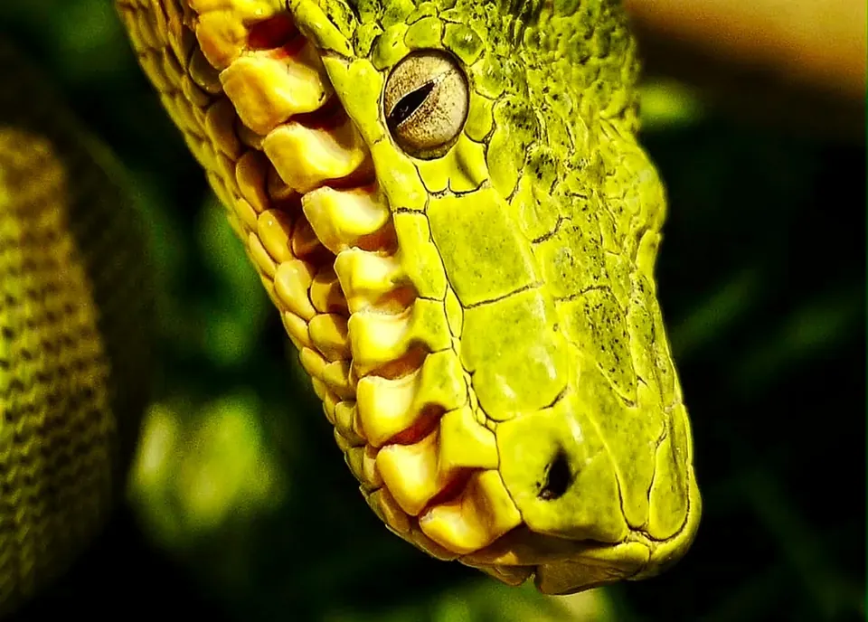
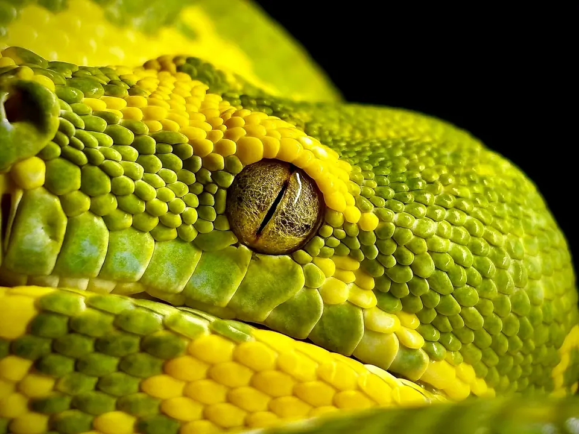

ODPOWIEDŹ W JEDNYM ZDANIU
Ta sama logika hodowli, ale nie ten sam gotowy program
Gdy ktoś pierwszy raz widzi je obok siebie, pytanie nasuwa się samo: skoro oba spędzają dzień zwinięte na gałęzi, to czy wystarczy skopiować terrarium? Nie. Wspólne są zasady — stabilna żerdź, wybór temperatury, dobra wymiana powietrza, czysta woda i spokojna obsługa. Różnią się jednak tolerancją błędów, przeciętną budową, zachowaniem, dostępnością pewnych CBB i tym, jak ostrożnie trzeba prowadzić mikroklimat.
Jeśli wybór dotyczy tylko tych dwóch gatunków, dla większości osób zaczynających z wężami nadrzewnymi rozsądniejszy będzie zdrowy, dobrze rozkarmiony Morelia viridis CBB od przejrzystego hodowcy. To nadal nie jest „łatwy wąż”. Dobry C. caninus CBB jest jednak lepszym wyborem niż tani, słabo udokumentowany lub importowany pyton zielony.
Większy wybór linii i hodowców, zwykle niższa cena, nadal mały margines dla przegrzania i złej wentylacji.
Mniejsza podaż CBB, częściej reaktywny w obsłudze i mniej wybaczający przy mokrym, dusznym terrarium.
Jak czytać ten artykuł: zakresy temperatury i wilgotności są konserwatywnymi punktami startowymi do uruchomienia i sprawdzenia gotowej obudowy. Nie są wynikiem badania, które wyznaczyło jedną idealną liczbę dla każdego osobnika. Ostateczne ustawienia koryguje się na podstawie pomiarów w kilku miejscach, sposobu korzystania z żerdzi, kondycji i historii konkretnego węża.
WYGLĄD • TAKSONOMIA • BIOLOGIA
Ewolucja wymyśliła podobny kształt dwa razy
Morelia viridis jest pytonem z Nowej Gwinei i północnego Queensland. Corallus caninus należy do boa i występuje w północno-wschodniej części Ameryki Południowej, głównie w regionie Guiana Shield. Dzieli je ocean i odległe pokrewieństwo, a łączy podobna nisza: nocny drapieżnik polujący z zasadzki ponad ziemią. Zieleń dorosłych, chwytny ogon, szeroka głowa, dołki termiczne i charakterystyczne pętle na gałęzi to klasyczny przykład konwergencji ewolucyjnej. [1–2]
C. caninus jest zwykle masywniejszy, ma bardziej kanciastą głowę i często mocniejsze białe znaczenia grzbietowe. M. viridis najczęściej wygląda smuklej, lecz zmienność między populacjami i osobnikami jest duża. Młode obu gatunków mogą różnić się od zielonych dorosłych: u pytonów spotyka się neonaty żółte, a w północnej części kompleksu także czerwone; młode C. caninus bywają żółte, pomarańczowe lub czerwone. Zmiana koloru jest procesem rozwojowym, a nie sygnałem gotowości do rozrodu. [3]
Różni je również sposób rozmnażania: Corallus rodzi żywe młode, a Morelia składa jaja. Jest jeszcze ważna pułapka nazewnicza. Amazon Basin Emerald Tree Boa jest dziś ujmowany jako Corallus batesii, nie jako większa „odmiana” C. caninus. Z kolei część północnych pytonów, które w handlu nadal zbiorczo nazywa się M. viridis, bywa klasyfikowana jako Morelia azurea. Lokalności i taksonu nie potwierdza sam wygląd — potrzebne jest pochodzenie. [4]
| Cecha | Morelia viridis | Corallus caninus |
|---|---|---|
| Rodzina i rejon | Pythonidae; Nowa Gwinea, część wysp i Cape York | Boidae; region Guiana Shield i północno-wschodnia Ameryka Południowa |
| Budowa | Zwykle smuklejsza, duża zmienność geograficzna | Zwykle masywniejsza, szeroka głowa i bardzo długie przednie zęby |
| Rozród | Jajorodny | Żyworodny |
| Aktywność | Głównie nocna; młode częściej wykorzystują niższe partie i polują również za dnia | Głównie nocna; czujny drapieżnik z zasadzki |
| Kontakt z człowiekiem | Duże różnice osobnicze; część CBB dobrze znosi krótką, konieczną obsługę | W praktyce częściej opisywany jako reaktywny; skutki ukąszenia mogą być dotkliwe |
| Rynek CBB | Zwykle większy wybór i więcej historii hodowlanych do weryfikacji | Mniej ofert; warto czekać na właściwe zwierzę zamiast obniżać kryteria |

CIEPŁO • WILGOTNOŚĆ • POMIAR
Najgroźniejsze jest nie „za mało tropiku”, lecz brak wyboru
Oba węże potrzebują gradientu. Nie ogrzewamy całej obudowy do temperatury widocznej na termostacie i nie zakładamy, że sonda przy suficie opisuje żerdź dwadzieścia centymetrów niżej. W gotowym terrarium mierzę temperaturę powietrza przy kilku żerdziach i temperaturę ich powierzchni. Sonda sterująca musi być zamocowana tak, by wąż jej nie przesunął, a odczyt regulatora sprawdza niezależny termometr. Pirometr mierzy powierzchnię, nie powietrze.
| Parametr | Morelia viridis | Corallus caninus |
|---|---|---|
| Ciepła, używana żerdź | około 28–30°C | około 28–30°C |
| Powietrze po cieplejszej stronie | około 25–27°C | około 25–27°C |
| Chłodniejszy wybór | około 22–25°C | około 22–24°C |
| Noc | zwykle około 21–24°C | zwykle około 22–24°C |
| Wilgotność między cyklami | często około 50–70% RH | często około 65–80% RH |
| Po zraszaniu | krótkotrwały wzrost jest normalny; powierzchnie i żerdzie muszą następnie wyschnąć | |
Te zakresy zbierają współczesne zalecenia praktyczne, nie ustanawiają jednej biologicznej normy. W literaturze hodowlanej dla C. caninus spotyka się zarówno wyższe, jak i wyraźnie niższe wartości RH prowadzone z powodzeniem. To ważna lekcja: sam procent nie mówi, czy skóra wysycha, wąż pije, a powietrze jest świeże. Wiek, pochodzenie, pora roku, wentylacja, materiał obudowy i dokładność czujnika zmieniają działanie tej samej liczby. [5–8]
Stałe 31–32°C w całym terrarium nie jest „bezpieczniejszym tropikiem”. Taka wartość może dotyczyć punktowej powierzchni w konkretnym projekcie, ale nie zastępuje chłodniejszej żerdzi. Przegrzanie, odwodnienie i brak nocnego spadku są realnym ryzykiem dla obu gatunków.
WENTYLACJA • ZRASZANIE • SUSZENIE
Wilgotne nie znaczy mokre, a tropikalne nie znaczy szczelne
Najgorsze terrarium dla tych węży potrafi wyglądać bardzo efektownie: szyby stale zaparowane, krople na każdej ścianie i podłoże, które nigdy nie przesycha. Problem w tym, że wilgotny las ma ogromną objętość i ciągły ruch powietrza. Małe, zamknięte pudełko z ciepłą, stojącą wilgocią jest zupełnie innym środowiskiem.
Wentylacja powinna działać przez całą dobę. Otwory na różnych wysokościach pomagają wymianie grawitacyjnej, a ich powierzchnię dobiera się do wielkości i sposobu ogrzewania obudowy. Nie zakleja się ich, by „dobić do 90%”. Jeśli wilgotność znika w kilka minut, poprawiamy projekt, pojemność wodną podłoża lub sposób zraszania — bez odbierania zwierzęciu świeżego powietrza.
Zraszanie najlepiej traktować jako cykl: zwilżenie, możliwość picia z kropli, potem wyraźne wysychanie żerdzi i powierzchni. W wielu warunkach rozsądnym punktem wyjścia jest zraszanie wieczorem, gdy węże zaczynają aktywność. Druga sesja ma sens tylko wtedy, gdy pomiary, wysychanie i stan zwierzęcia jej wymagają. Czysta miska z wodą pozostaje dostępna zawsze — krople jej nie zastępują. Higrometr umieszczony przy używanej żerdzi mówi więcej niż czujnik leżący na mokrym podłożu. [9]
Najczęściej przed wieczorną aktywnością.
Czy wąż pije i gdzie faktycznie rośnie RH.
Żerdzie i powierzchnie nie mogą pozostawać stale mokre.
Temperaturę, RH i zachowanie, zamiast regulować „na oko”.
POKARM • KONDYCJA • CZĘSTOTLIWOŚĆ
Nadrzewny wąż nie musi rosnąć na rekord
Oba gatunki są drapieżnikami z zasadzki i dobrze wykorzystują energię. To nie jest zaproszenie do cotygodniowego karmienia dorosłego, tylko do kontroli kondycji. U zdrowych dorosłych jako ostrożny punkt wyjścia często przyjmuje się odpowiednio dobranego, rozmrożonego gryzonia mniej więcej co 2–4 tygodnie u M. viridis i co 3–4 tygodnie u C. caninus. Nie jest to kalendarz do mechanicznego odhaczania. Wiek, płeć, masa, sezon, aktywność, rozród i wcześniejsze trawienie mogą ten odstęp zmienić.
Ofiara ma być odpowiednia do budowy węża, nie największa możliwa do połknięcia. Zbyt duży pokarm, zbyt wysoka temperatura i ponawianie karmienia po każdej odmowie zwiększają ryzyko problemów. Rozmrożone całe gryzonie ograniczają ryzyko urazu ze strony żywej ofiary i zwykle nie wymagają rutynowego „posypywania witaminami”. Karmię szczypcami po zmroku, nie zostawiam metalowego końca jako pierwszego celu i po posiłku zapewniam spokój.
Odmowa jednego posiłku nie jest diagnozą. Najpierw sprawdza się temperaturę na żerdzi, porę podania, cykl wylinki, płeć, sezon i kondycję. Powtarzające się odmowy połączone z utratą masy, zwrotem pokarmu, zmianą oddechu albo przebywaniem na dnie wymagają oceny przyczyny, a nie coraz częstszych prób. Opisy przypadków M. viridis pokazują, że błędy utrzymania mogą kończyć się między innymi otyłością, stłuszczeniem wątroby, dną, zapaleniem jamy ustnej lub wychudzeniem — mała seria nie mówi jednak, jak często te problemy występują w całej populacji. [10]

AKTYWNOŚĆ • CHARAKTER • STRES
„Siedzi bez ruchu” nie znaczy, że nie korzysta z przestrzeni
Długie trwanie w jednej pozycji jest normalną strategią łowiecką. Badania terenowe M. viridis pokazują nocną aktywność dorosłych, różnice między młodymi i dorosłymi oraz korzystanie z różnych wysokości, a nawet z podłoża. Osobnik może tkwić w zasadzce przez wiele dni, po czym zmienić miejsce, gdy warunki lub szansa na zdobycz przestaną mu odpowiadać. Dlatego terrarium nie powinno składać się z jednej cienkiej gałęzi pod grzejnikiem. [11]
Potrzebne są stabilne żerdzie o różnych średnicach i temperaturach, osłona wizualna oraz możliwość wyboru. Najbardziej praktyczne są żerdzie wyjmowane razem z wężem. Podczas sprzątania nie odrywa się kolejnych pętli od gałęzi. Przenosi się całą żerdź do pojemnika albo spokojnie zachęca węża hakiem, podtrzymując ciało i ogon.
Nie ma mocnych badań, które pozwalałyby uczciwie stwierdzić, że każdy C. caninus jest agresywny, a każdy M. viridis łagodny. W praktyce hodowlanej C. caninus częściej uchodzi za reaktywnego, a jego bardzo długie przednie zęby sprawiają, że nawet niejadowite ukąszenie może być poważne. Oba gatunki traktuję przede wszystkim jako zwierzęta do obserwacji. Obsługa ma służyć zdrowiu, transferowi i czyszczeniu, a nie regularnemu „oswajaniu”. Szczególnie unikamy jej po karmieniu, w czasie aklimatyzacji, przy problemach z wylinką i objawach choroby.
Zachowanie jest informacją. Utrata chwytu, częste spadanie, uporczywe ocieranie pyska, długie moczenie, nagła nadaktywność, leżenie na dnie, świsty lub oddychanie z otwartym pyskiem nie powinny być zbywane jako „taki charakter”.
MARGINES BEZPIECZEŃSTWA
Podobne błędy, różna cena pomyłki
U obu gatunków najwięcej problemów zaczyna się nie od jednej niewłaściwej liczby, lecz od źle zaprojektowanego systemu. C. caninus ma reputację mniej wybaczającego przy połączeniu wysokiej temperatury, mokrych powierzchni i słabej wentylacji. M. viridis też nie jest odporny na taki układ — po prostu łatwiej znaleźć dla niego więcej zwierząt CBB, opisów praktyki i doświadczonych hodowców.
- 01Jedna temperatura wszędzie
Brak chłodniejszej żerdzi odbiera możliwość termoregulacji.
- 02Sonda w złym miejscu
Pomiar przy podłodze nie opisuje ciała węża pod sufitem; luźna sonda może zostać przesunięta.
- 03Stałe „90%”
Szczelna, ciepła i mokra obudowa to nie las deszczowy. Liczy się cykl i ruch powietrza.
- 04Jedna niestabilna żerdź
Nie daje wyboru mikroklimatu i utrudnia bezpieczny transfer.
- 05Przekarmianie
Nadmierna masa nie jest dowodem dobrego wzrostu; duży posiłek zwiększa obciążenie układu pokarmowego.
- 06Zakup koloru zamiast historii
„CBB”, lokalność i zdrowie muszą mieć dowody. Zdjęcie z ogłoszenia nie wystarcza.
- 07Częsta obsługa
Niepotrzebna manipulacja zwiększa stres i ryzyko urazu u zwierzęcia oraz opiekuna.
- 08Brak dziennika
Bez masy, karmień, wylinek i ustawień trudno zauważyć trend zanim stanie się problemem.
POCHODZENIE • ZDROWIE • KWARANTANNA
CBB to dobry początek pytania, nie koniec weryfikacji
Skrót CBB oznacza zwierzę urodzone i wyhodowane w niewoli. Nie gwarantuje jednak zdrowia, prawidłowego rozkarmienia ani prawdziwości ogłoszenia. W przypadku obu gatunków proszę o datę urodzenia lub wyklucia, identyfikację rodziców, dotychczasowe masy, daty i rodzaj pokarmu, odmowy, zwroty pokarmu, wylinki, leczenie oraz aktualny film pokazujący oddech, chwyt i ruch. Przy lokalności potrzebny jest rodowód, a nie podobieństwo koloru.
Na rynku europejskim łatwiej znaleźć różne linie M. viridis CBB. To zaleta, ale również pole dla niejasnych opisów „farm bred” lub osobników importowanych. C. caninus CBB pojawia się rzadziej, więc poszukiwania mogą trwać dłużej. Brak dobrej oferty nie jest powodem, by rezygnować z kwarantanny, historii karmienia lub dokumentów. Każdy nowy wąż powinien trafić do oddzielnej, łatwej do kontroli kwarantanny; zakres badań dobiera lekarz weterynarii zajmujący się gadami do pochodzenia i ryzyka kolekcji. [12]
Rodzice, data urodzenia, indywidualna historia karmień, aktualne materiały i spójne dokumenty.
Brak mas, filmu, pochodzenia i odpowiedzi o zwrotach pokarmu lub chorobach w kolekcji.
Dokładną listę pytań i sygnałów ostrzegawczych zebrałem już w osobnym poradniku: jak kupić zdrowego pytona zielonego lub Corallus caninus.
CENY SPRAWDZONE 05.09.2026
Corallus jest zwykle droższy, a dobre terrarium kosztuje podobnie
Nie podaję „średniej z internetu”, jeśli mam tylko kilka ofert. Poniższe liczby są migawką rynku z początku września 2026 r. i służą do planowania skali budżetu. Sprzedawcy deklarują CBB i sposób karmienia; ogłoszenie nie pozwala niezależnie potwierdzić zdrowia zwierzęcia.
| Pozycja | Morelia viridis | Corallus caninus |
|---|---|---|
| Młody CBB, typowe linie z odczytanej próbki | około 350–550 EUR, czyli ok. 1510–2375 zł | około 750–800 EUR, czyli ok. 3240–3450 zł |
| Terrarium PCV 60 × 60 × 60 cm z panelem 75 W i LED | 1530 zł — przykład ceny infrastruktury, nie uniwersalny docelowy wymiar | |
| Termostat Microclimate Evo Connected 2 | 949,99 zł | |
| Automatyczny zraszacz, dwa dysze | 319,99 zł; wygoda, nie obowiązek | |
| Termo-higrometr + przykładowe tło korkowe | około 97,49 zł | |
| Suma przykładu przed żerdziami, miską, podłożem, transportem i rezerwą | około 4407–5272 zł | około 6137–6347 zł |
Do tej sumy trzeba doliczyć stabilne żerdzie i mocowania, miskę, podłoże lub wkłady kwarantannowe, dodatkowy termometr, pojemnik transportowy, dostawę oraz osobny fundusz na lekarza i diagnostykę. Selekcyjne linie M. viridis potrafią kosztować ponad 1000 EUR, więc gatunek nie wyznacza górnego pułapu. Przeliczenie euro opiera się na kursie NBP 1 EUR = 4,3179 zł z 4 września 2026 r. [13–14]
Podany zbiornik 60 × 60 × 60 cm jest wyłącznie uczciwym punktem cenowym z jednej aktualnej oferty. Nie ogłaszam go automatycznie docelowym domem dla każdego dorosłego. Wielkość i układ terrarium dobiera się do rozmiaru konkretnego węża, liczby funkcjonalnych żerdzi, gradientu i możliwości pełnego, swobodnego poruszania się. Więcej o kosztach całego systemu piszę w artykule ile naprawdę kosztuje utrzymanie węża.
DECYZJA • NIE RANKING URODY
Który gatunek jest rozsądniejszy na pierwszy krok w nadrzewne?
Dla większości osób: Morelia viridis. Nie dlatego, że jest prosty, lecz dlatego, że częściej można znaleźć zdrowego, regularnie karmionego CBB z udokumentowaną historią, porównać oferty i poprosić o pomoc hodowcę znającego daną linię. Mniejszy koszt zakupu zostawia też więcej budżetu na termostat, kwarantannę i rezerwę medyczną.
Corallus caninus wybrałbym wtedy, gdy opiekun umie już przez kilka tygodni utrzymać i udokumentować stabilny pionowy gradient, pogodzić wilgoć z wentylacją i pełnym wysychaniem, oceniać kondycję bez przekarmiania, przenieść węża na żerdzi oraz zauważyć subtelne zmiany zdrowia. Potrzebna jest też cierpliwość finansowa i gotowość, by czekać na właściwe CBB.
to Twój pierwszy wyspecjalizowany wąż nadrzewny, masz dobrego hodowcę i chcesz uczyć się na gatunku z szerszym zapleczem CBB — po wcześniejszym przetestowaniu terrarium.
to właśnie ten gatunek naprawdę chcesz hodować, masz już opanowany mikroklimat i bezpieczną obsługę, a oferta ma pełną, sprawdzalną historię.
terrarium działa dopiero od wczoraj, nie masz planu kwarantanny ani lekarza, a decyzję opierasz na cenie, kolorze lub zapewnieniu „bezproblemowy”.
Wybór ulubionego gatunku ma znaczenie — zwierzę ma zostać z nami na lata. Zainteresowanie nie zastępuje jednak kompetencji. Jeżeli marzeniem jest C. caninus, rozsądna droga nie musi prowadzić przez zakup innego węża „na próbę”. Może prowadzić przez miesiące przygotowań, rozmowy z hodowcami, uruchomione terrarium i rezygnację z kilku niepewnych ofert.
WNIOSEK
Nie kopiuj terrarium. Zrozum system
Corallus caninus i Morelia viridis wyglądają jak bliscy kuzyni, lecz są efektem podobnej odpowiedzi na podobny sposób życia. Hoduje się je według wspólnych zasad, ale z innym marginesem bezpieczeństwa i bez automatycznego przenoszenia każdej liczby.
Dobre terrarium nie utrzymuje jednej „idealnej” temperatury i wilgotności. Daje wybór żerdzi, świeże powietrze, przewidywalny cykl wilgoci i suszenia, czystą wodę oraz bezpieczną obsługę. A dobry zakup zaczyna się od zdrowego CBB z historią — nie od najładniejszego zdjęcia.
ŹRÓDŁA I METODA
Na czym opieram porównanie
- The Reptile Database — Corallus caninus oraz Morelia viridis — aktualna taksonomia i zasięg.
- Smithsonian's National Zoo — Green tree python — biologia, budowa i rozród pytona zielonego.
- Wilson, Heinsohn i Endler (2006), The adaptive significance of ontogenetic colour change in a tropical python.
- Reynolds i wsp. (2020), A revised taxonomy and molecular phylogeny of the booid snake family Boidae; rozróżnienie C. caninus i C. batesii.
- ReptiFiles — Green Tree Python Care Sheet — współczesne zalecenia praktyczne dla M. viridis.
- Herpeton Academy — Corallus caninus care sheet — współczesny praktyczny punkt odniesienia.
- Polanco, Husbandry and Breeding of the Emerald Tree Boa, Part I — mikroklimat, powietrze i przygotowanie obudowy.
- Polanco, Husbandry and Breeding of the Emerald Tree Boa, Part II — praktyka hodowlana; starsze ujęcie taksonomiczne należy czytać ostrożnie.
- MSD Veterinary Manual — Management and Husbandry of Reptiles — pomiary, środowisko, żywienie i profilaktyka.
- Knotek i wsp., Diseases of green tree pythons caused by mal-management — seria przypadków; nie służy do szacowania częstości chorób.
- Wilson i wsp. — On green pythons: the ecology and conservation of Morelia viridis oraz Animal Diversity Web — aktywność i ekologia.
- Gonzo Exotics — audyt przed zakupem — dokumentacja, film, historia karmienia, diagnostyka i kwarantanna.
- Oferty odczytane 05.09.2026: MN Reptil — Morelia viridis, FaunaPortal — CBB 2026, Terraristik — C. caninus CB 2026 i CBB 2025. Ogłoszenia dokumentują ceny i deklaracje sprzedawców, nie stan zdrowia.
- IMCAGES — zestaw terrarium 60 × 60 × 60, Microclimate, przykład zraszacza, termo-higrometr i tabela kursów NBP 172/A/NBP/2026 — ceny i kurs do kalkulacji.
Źródła i ceny sprawdzono 5 września 2026 r. Zakresy hodowlane zestawiają publikacje z praktycznymi poradnikami; różnice między szkołami zostały zachowane zamiast sztucznie sprowadzone do jednej liczby.